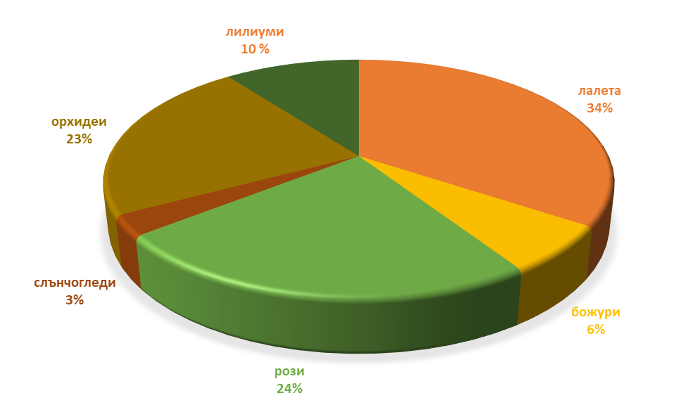

Кои цветя са най-популярни?
Питали ли сте се какво най-често излита от нашата работна маса по време на най-натоварените дни? След години рязане на дръжки и метене на паднали листенца, тенденциите в поръчките стават доста ясни!
Всички знаем, че на 8-и март магазина ни се превръща в истинско море от цветове, а числата разказват доста ясна история. Лалетата заемат първото място с 34%, превръщайки се в безспорен фаворит за всеки, който търси свеж и класически букет пролетна енергия. Розите (24%) и орхидеите (23%) ги следват по петите — орхидеите в саксия станаха любим избор за тези, които искат подарък, цъфтящ дълго след като празникът отмине. Лилиумите държат стабилни 10% от поръчките, а божурите (6%) и жизнерадостните слънчогледи (3%) допълват микса за търсещите нещо малко по-необичайно. Независимо дали е пъстър букет лалета или една роза с дълга дръжка, всеки избор е знак за обич към някоя невероятна жена!
Зад всеки процент от нашата статистика, на рафта ни стои ваза пълна със със свежи цветя, готови да направят всеки ваш специален момент в цветна еуфория. Дали за 8-ми март или за друг повод - потърсете ни, "Сини слънчогледи" е мястото, където всеки стрък се превръща в радост, усмивка, щастие.
